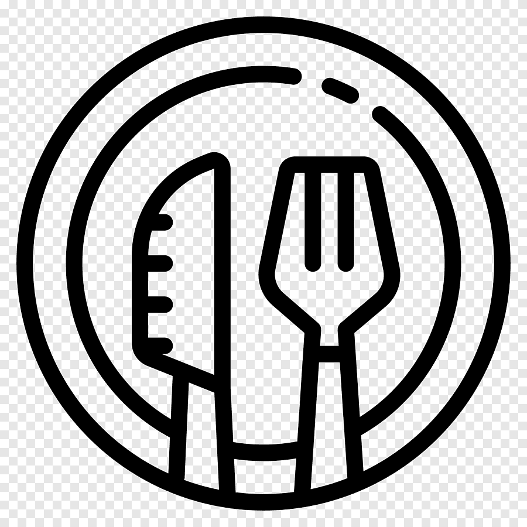

Mes différentes passions

La musique

La lecture

La cuisine
Ivoirienne de 30 ans célibataire domiciliée à Bassam.
De 2007 à 2008, j’ai commencé mon parcours académique en obtenant mon Certificat d’Étude Primaire Élémentaire (CEPE) au Groupe Scolaire Abbé Broukoi.
Ce fut ma première grande étape, marquant la fin de mon éducation primaire.
Quelques années plus tard, de 2012 à 2013, j’ai obtenu mon Brevet d’Étude
du Premier Cycle (BEPC) au Groupe Scolaire SELODESIR. Cette étape a été importante dans mon éducation secondaire, me préparant pour les défis à venir.
En 2016–2017, j’ai réussi à obtenir mon Baccalauréat série D au Groupe Scolaire Les Pingouins à Abobo. Ce fut un moment de fierté pour moi, car il
marquait la fin de mes études secondaires et ouvrait des portes à de nouvelles opportunités.
Enfin, en 2017–2018, j’ai terminé ma formation professionnelle
et reçu une Attestation de fin de formation avec une spécialisation en Caissière à l’Institut de Formation Sainte Marie (IFSM) à Abobo. Cette formation m’a
dotée de compétences pratiques et m’a préparée à entrer dans le monde du travail, ce qui m'a permis en 2019 d'être gérante dans une agence Orange Money de la place. Chaque étape de mon parcours a contribué à faire de moi la personne que je
suis aujourd’hui, et je suis reconnaissante pour les expériences et les connaissances que j’ai acquises au fil des années.
Mes passions sont pour moi une source d'inspiration dans tout ce que je fait tout les jours que Dieu fait.